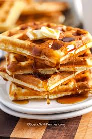

Description
This waffle recipe creates light and fluffy waffles that are perfect for breakfast or brunch. Top with your favorite fruits, syrup, or whipped cream for a delicious meal.
Ingredients
- Flour: 2 cups of all-purpose flour.
- Sugar: 2 tablespoons of granulated sugar.
- Baking Powder: 2 teaspoons of baking powder.
- Salt: 1/2 teaspoon of salt.
- Milk: 1 and 3/4 cups of milk.
- Eggs: 2 large eggs.
- Butter: 1/2 cup of melted butter.
- Vanilla Extract: 1 teaspoon of vanilla extract.
Tip: Serve with fresh berries, maple syrup, and a dollop of whipped cream for an extra special treat.
Steps
- Preheat your waffle iron.
- In a large bowl, mix together the flour, sugar, baking powder, and salt.
- In another bowl, whisk together the milk, eggs, melted butter, and vanilla extract.
- Pour the wet ingredients into the dry ingredients and stir until just combined.
- Pour the batter onto the preheated waffle iron and cook until golden brown.
- Serve warm with your favorite toppings.
Go back